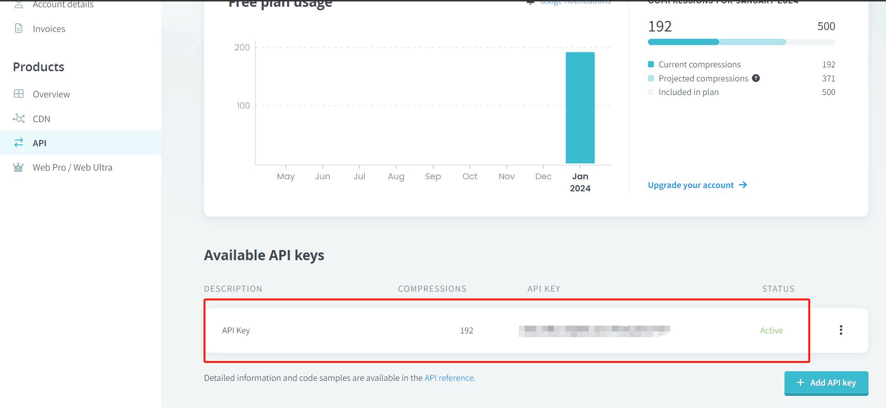

TinyPNG 是一个提供图片压缩服务的网站，可以直接在其官方网站上上传并压缩 png 或 jpg 图片，同时它也提供第三方使用的 api。下面介绍使用其 api 开发的 tinifier，可以在命令行中将指定文件夹内的所有图片批量压缩。
TinyPNG 官网：https://tinypng.com/
tinifier 主页：https://github.com/tarampampam/tinifier
api 申请：https://tinypng.com/developers
首先申请一个自己的 api，每个账户每月有 500 次请求的免费额度。在上面的 api 申请网页中输入邮箱申请即可，打开邮件回复的链接进入个人主页，在 api 栏可以看到或新建 api：

github release 页面下载 tinifier 最新版，注意需要在 cli 命令行中使用。为了方便在 windows 下调用，可以将程序路径加入系统 path 中。linux 可以添加一个软链接到 /usr/local/bin 中。
可用命令：
- compress 压缩指令
- -h 帮助
- -k 指定 api key 也可以使用 TINYPNG_API_KEY 环境变量预设，用逗号
,隔开多个 key - -e 指定目录中需要压缩的图片类型
- -r 递归搜索指定的目录文件夹的子文件夹
- -t 指定压缩时的线程数
示例：
# 压缩一个图片
tinifier compress -k 'YOUR-API-KEY-GOES-HERE' ./img.png
#压缩一个目录中的所有 png 图片
tinifier compress -k 'YOUR-API-KEY-GOES-HERE' -e png ./images-directory
# 使用20线程压缩所有 png jpg 格式的图片并循环搜索所有子文件夹
tinifier compress -k 'YOUR-API-KEY-GOES-HERE' -e png -e jpg -e PNG -e JPG -t 20 -r ./some-dir以上就是通过 tinyPNG api 批量压缩本地图片的基本用法。实际使用中及大幅度的减小了本地图片磁盘占用量。建议使用时提前设置好 API 的系统环境变量，可以更加方便的使用压缩命令。
没有评论